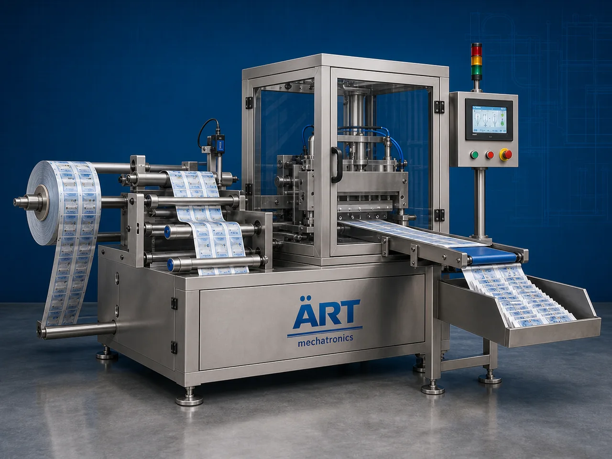

Packing Machine with Batch Cutter (Automatic Strip Cutting & Packaging System)
A Packing Machine with Batch Cutter, also known as a Strip Cutting Packing Machine, Automatic Batch Cutter Packaging Machine, or Strip Pouch Cutting Machine, is an advanced industrial packaging solution designed for high-speed pouch packaging, strip formation, synchronized batch cutting, sachet…

About the Batch Cutter
These machines are widely used for: ✔ Strip pouch packaging ✔ Automatic batch cutting ✔ Multi-pouch strip formation ✔ High-speed sachet packaging ✔ FMCG packaging automation ✔ Continuous industrial production
The machine improves: ✔ Packaging speed ✔ Strip cutting accuracy ✔ Production efficiency ✔ Packaging consistency ✔ Labor productivity ✔ Secondary packaging handling
Industrial packing machines with batch cutters use: ✔ Servo synchronized cutting systems ✔ Rotary or reciprocating batch cutters ✔ PLC and HMI automation controls ✔ High-speed sealing mechanisms ✔ Precision pouch synchronization systems
to produce perfectly cut pouch strips at ultra high production speeds for easy handling, batching, collating, and carton packing operations.
Packing machines with batch cutters are widely used in industries such as:
Pan masala & mouth freshener industries
Tobacco industries
Food processing industries
FMCG industries
Pharmaceutical industries
Spice industries
Confectionery industries
Consumer goods industries
where high-speed strip packaging and synchronized batch cutting are essential.
The machine is highly suitable for: ✔ Pan masala strip packaging ✔ Tobacco pouch strip cutting ✔ Sachet strip packaging ✔ FMCG strip packs ✔ Multi-pouch batch cutting ✔ High-speed packaging automation
ART Mechatronics offers high-performance packing machines with batch cutters, engineered for continuous industrial operation, accurate strip cutting, synchronized packaging performance, and reliable long-term automation.
Working Principle of Packing Machine With Batch Cutter
Machine forms and fills pouches continuously using: ✔ VFFS systems ✔ Collar type systems ✔ Multi-lane packaging systems
Products are filled and sealed continuously into strip format
Machine synchronizes pouch movement with batch cutting system for accurate strip cutting.
Machine performs: ✔ Multi-pouch strip cutting ✔ Strip separation ✔ Batch formation ✔ Continuous synchronized cutting at ultra high production speeds.
Finished strips discharge automatically for: Manual collection Strip collating Carton packing Secondary packaging operations
System controls: Strip length Cutting synchronization Packaging speed Pouch alignment Batch quantity
Uniform strip packs discharged continuously for: Retail packaging High-speed batching Cartoning Dispatch operations
Types of Packing Machines With Batch Cutter
- 1. Rotary Batch Cutter Packing Machine
Designed for: ✔ Ultra high-speed strip cutting applications
- 2. Pneumatic Batch Cutter Packaging Machine
Suitable for: ✔ Standard industrial strip packaging operations
- 3. Servo Driven Strip Packaging Machine
Uses: ✔ Precision synchronized cutting systems
- 4. Multi Lane Batch Cutter Machine
Designed for: ✔ Multi-track sachet strip packaging systems
- 5. Food Grade Strip Packaging Machine
Suitable for: ✔ Hygienic food and pharmaceutical packaging systems
- 6. Fully Automatic Batch Cutter Packaging System
Designed for: ✔ Complete industrial packaging automation lines
Industries Using Packing Machines With Batch Cutter
🌿 Pan Masala & Mouth Freshener Industry Pan masala, supari, sweet supari, elaichi, and mouth freshener strip packaging systems 🚬 Tobacco Industry Tobacco, khaini, zarda, nicotine, and snus strip packaging systems 🌶️ Spice Industry Turmeric, chilli powder, seasoning, and spice sachet strip packaging systems 🍃 Food Processing Industry Snack, namkeen, sugar, grains, and sachet strip packaging systems 🛒 FMCG Industry Consumer strip pouch packaging systems 💊 Pharmaceutical Industry Medicine sachet strip packaging systems 🍬 Confectionery Industry Candy and confectionery strip pack systems 📦 Consumer Goods Industry Retail strip pouch packaging systems
Features & Advantages
✔ High-speed automatic strip packaging operation ✔ Accurate synchronized batch cutting system ✔ Uniform strip length and cutting quality ✔ PLC and servo automation control systems ✔ Supports multiple strip formats and pouch sizes ✔ Improves packaging line productivity ✔ Reduces manual labor and handling difficulty ✔ Hygienic food-grade construction available ✔ Reliable long-term industrial performance
Technical Highlights
Machine Type: Rotary batch cutter machine Pneumatic strip cutting machine Servo packaging machine Packaging Material: Laminated films Metalized films Polyester films Features: PLC control system Servo synchronization Touchscreen HMI Adjustable strip cutting settings High-speed rotary cutter Packaging Style: Strip pouch packaging Sachet strip packaging Multi-pouch batch cutting Automation: Semi-automatic Fully automatic industrial systems
Turnkey Strip Packaging Solutions
ART Mechatronics offers: Complete strip packaging systems Batch cutter automation solutions Packaging line synchronization systems Secondary packaging integration Installation & commissioning After-sales service & AMC
Why Choose Art Mechatronics
Expertise in industrial packaging and strip automation systems Customized strip cutting solutions for multiple industries High-performance and durable cutting technology Advanced PLC and servo automation systems Proven industrial packaging performance across sectors
Applications
Pan Masala Manufacturing Plants Tobacco Processing Units Food Processing Industries FMCG Packaging Facilities Pharmaceutical Industries Spice Processing Plants
Get pricing & specs for the Batch Cutter
Share the product, target capacity, current process and plant location. These details help our engineers discuss the right machine or line configuration.
One partner, from design to start-up
ART Mechatronics designs, manufactures, installs and commissions your Batch Cutter solution with regional presence in India, UAE and Thailand.